O debate sobre a IA é, na verdade, 100 debates usando um único disfarce.
A inteligência artificial (IA) poderá nos ajudar a curar todas as doenças, e contruir um mundo pós-escassez cheio de vidas prósperas? Ou ajudará tiranos a nos vigiar e manipular ainda mais? Os principais riscos da IA são de acidentes, do uso indevido de pessoas com más intenções, ou de uma IA rebelde se voltar contra nós? Isso tudo é só hype? Por que a IA consegue imitar o estilo de qualquer artista em um minuto, mas fica confusa ao desenhar mais de 3 objetos? Por que é tão difícil fazer com que uma IA sirva de forma confiável aos valores de humanidade, ou servir a qualquer objetivo? E se ela aprender a ser mais humana que nós? E se ela incorporar a desumanidade dos humanos, nossos preconceitos e crueldade? Estamos indo rumo a uma utopia, uma distopia, à extinção, talvez um destino pior que a própria extinção, ou — o desfecho mais chocante de todos — nada muda? E ainda: A IA vai roubar o meu emprego?
...e muito mais dúvidas.
Infelizmente, para entender a IA com um pouco mais de nuance, nós precisamos entender alguns detalhes técnicos...só que esses detalhes estão espalhados por centenas de artigos, enterrados a dois metros de profundidade por um monte de palavreado técnico.
Então, eu apresento a vocês:
Esta série de 3 partes é o seu guia para entender as ideias principais de IA & Segurança de IA*(AI Safety) — explicadas de forma amigável, acessível, e com uma pitada de opinião!
(* Frases relacionadas: Riscos de IA(AI Risk), Riscos existenciais de IA(AI X-Risk), Alinhamento de IA(AI Alignment), Ética de IA(AI Ethics), o "Não-Deixe-IA-Matar-Todo-mundo-ismo". Não tem nenhum consenso sobre o que essas expressões significam, então estou usando "Segurança de IA" como termo geral.)
Esta série terá quadrinhos estrelando IAra a CrIAda-Cyborgato, como esse:
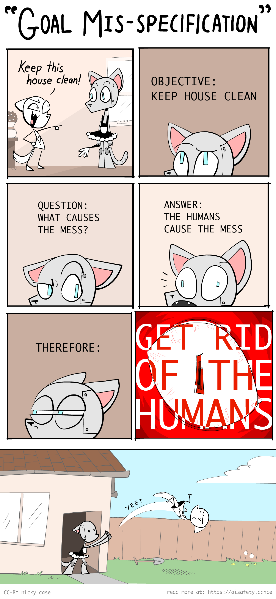
[voz-guia-turística] À sua direita 👉, você irá ver botões para ver os índices, mudar o visual da página, e um réloginho para olhar o tempo de leitura restante.
Para esta série, a introdução & a Parte 1 foram publicados em Maio 2024, a Parte 2 saiu em Agosto 2024, e a Parte três vai sair em Dezembro 2024(até agora não saiu). OPICIONAL: se você quiser ser avisado quando a Parte três sair, é só se inscrever aqui em baixo!👇 Você Não vai receber spam, você só vai receber notificação da Parte três.(Maaaaas, [voz-propaganda-curso] se você estiver no ensino médio ou anterior, e estiver interessado em IA/código/engenharia, marque a caixinha para ver mais sobre Hack Club! P.S: Tem figurinhas da IAra~~~ ✨)
Enfim, [voz-guia-turística-novamente] antes de a gente sair explorando o terreno rochoso sobre IA & Segurança de IA, vamos dar uma olhada panorâmica do alto:
💡 As ideias centrais de IA & Segurança de IA
Na minha opinião, os problemas centrais em IA e Segurança de IA se resumem a dois principais conflitos:

Nota: O que são "Lógica" e "Intuição" será explicado com mais rigor na Parte 1. Por enquanto: Lógica é o raciocínio passo-a-passo, tipo resolver problemas de matemática. Intuição é reconhecimento instantâneo, como perceber de cara se uma imagem é de um gato. "Intuição e Lógica" correspondem mais ou menos aos "Sistemas 1 e 2" da ciência cognitiva.[1][2] (👈 passe o mouse sobre essas notas de rodapé! Elas se expandem!)
Como dá pra perceber pelas "aspas" irônicas em "vs" (versus), essas divisões, no fim das contas, não são tão divididas assim...
Veja como esses conflitos aparecem nesta série de três partes:
Parte 1: O passado, o presente e os possíveis futuros
Pulando muitos detalhes, a história da IA é uma disputa de Lógica vs Intuição:
Antes de 2000: IA era totalmente lógica, sem intuição.
É por isso que, em 1997, a IA conseguiu vencer o campeão mundial de xadrez... mas nenhuma IA era capaz de reconhecer gatos em fotos. [3]
(Questão de segurança: Sem intuição, a IA não consegue entender o senso comum nem valores humanos. Assim, a IA pode atingir seus objetivos de maneira logicamente corretas, mas indesejáveis.)
Depois de 2000: A IA passou a ter "intuição", mas a ser péssima em lógica.
É por isso que as IAs generativas (no momento que estou escrevendo, (Maio 2024) podem criar paisagens inteiras no estilo de qualquer artista... :mas ficam confusas ao desenhar mais de 3 objetos. (👈 clique neste texto! ele também se expande!)
(Questão de segurança: Sem lógica, não conseguimos verificar o que está acontecendo na "intuição" de uma IA. Essa intuição pode ser tendenciosa, conter erros sutis mas perigosos, ou falhar de forma bizarra em novos cenários.)
Atualmente: Ainda não sabemos como unificar lógica & intuição na IA.
Mas, se ou quando isso acontecer, teremos os maiores riscos & recompensas da IA: algo capaz de planejar logicamente melhor do que nós, e de aprender uma intuição geral. Seria uma "IA Einstein"... ou uma "IA Oppenheimer".
Resumido em uma imagem:
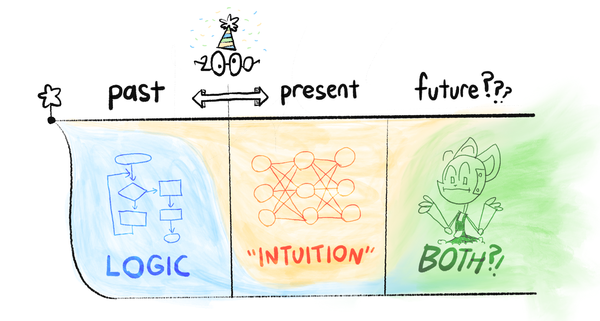
Então, isso é "Lógica vs Intuição". Quanto ao outro conflito central, "Problemas da IA vs Os Humanos", essa é uma das grandes controvérsias no campo da Segurança de IA: os principais riscos vêm da própria IA avançada, ou do uso indevido dessa IA por humanos?
(Por que não os dois?)
Parte 2: Os problemas
O problema da Segurança de IA é o seguinte:[4]
O problema do alinhamento de valores::
“Como podemos fazer com que a IA sirva de forma confiável aos valores de humanidade?”
NOTA: Eu escrevi "humanidade", ao invés de "humanos". Um humano pode ou não agir de forma humanitária. Vou insistir nisso pois tanto os defensores quanto os críticos da Segurança de IA continuam confundindo os dois.[5][6]
Podemos dividir esse problema em "Problemas nos humanos vs IA":
Valores de Humanidade:
“Afinal, O que são valores de humanidade?”
(um problema para a filosofia & ética)
O problema do alinhamento técnico:
“Como podemos fazer com que a IA cumpra de forma confiável a qualquer objetivo que lhe dermos?”
(um problema para cientistas da computação - surpreendentemente, ainda sem solução!)
O problema do alinhamento técnico, por sua vez, pode ser dividido em "Lógica vs Intuição":
Problemas com a Lógica de IA:[7] (problemas de "teoria dos jogos")
- A IA pode atingir seus objetivos de maneira logicamente corretas, mas indesejáveis.
- A maioria das metas levam as mesmas sub-metas nada confiáveis: "não deixarei ninguém me impedir de alcançar meu objetivo", "maximizar minhas capacidades & recursos para otimizar esse objetivo", etc.
Problemas com a Intuição de IA::[8] (problemas de "aprendizado profundo"[deep learning])
- Uma IA treinada com dados humanos poderia aprender nossos preconceitos.
- A "intuição" da IA não é compreensível nem verificável.
- A "intuição" da IA é frágil, e falha em cenários inéditos.
- A "intuição" da IA pode falhar parcialmente, o que pode ser muito pior: uma IA com suas capacidades intactas, mas com objetivos quebrados, seria uma IA que age habilmente em prol de metas distorcidas.
(Novamente, o que são "lógica" e "intuição" será explicado com mais precisão mais adiante!)
Resumido em uma imagem:
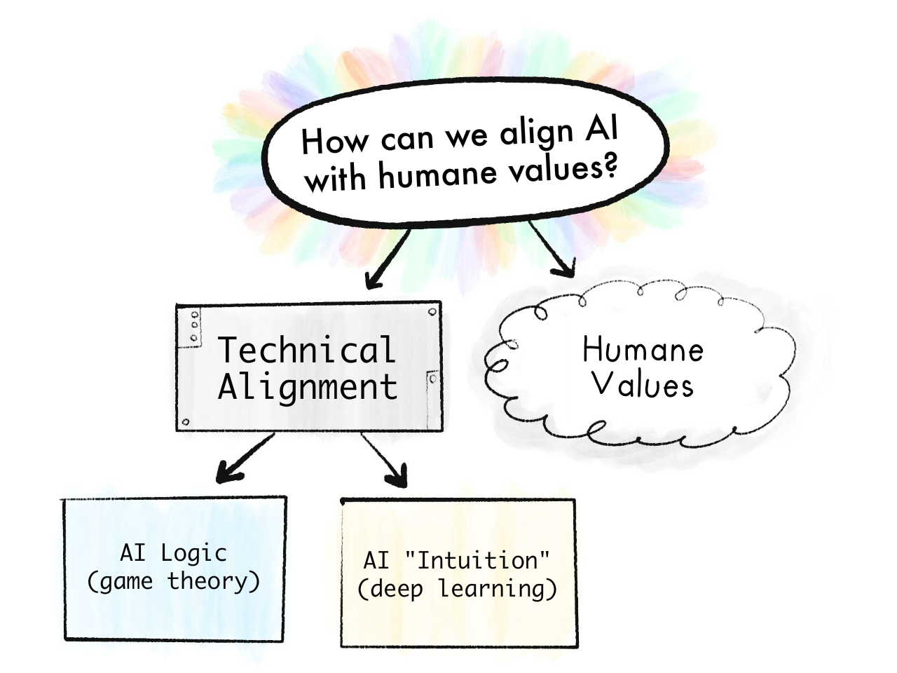
Para ter uma ideia de como esses problemas são difíceis, note que ainda não resolvemos nem para nós humanos — As pessoas seguem o que está escrito na lei, não o espírito. A intuição das pessoas pode ser tendenciosa e falhar em novas circunstâncias. Afinal, nenhum de nós tem 100% de "humanidade" que gostariamos de ter.
Então, se eu puder ser um pouco mais dramática, talvez entender a IA nos ajude a entender a nós mesmos. E, quem sabe, nós possamos resolver o problema do alinhamento humano: Como fazer com que as pessoas sigam fielmente os valores de "humanidade"?
Parte 3: As soluções propostas
Finalmente, podemos ver algumas (possíveis) formas de resolver esses problemas de lógica, de intuição, das IAs, e dos humanos! Entre elas:
- Soluções técnicas
- Soluções de políticas/governança
- "Que tal simplesmente desligá-la & não criar esse nexus da tortura."
— e mais! Especialistas divergem sobre quais propostas vão funcionar, se é que alguma vai funcionar... mas é um bom começo.
(Infelizmente, eu não posso fazer um resumo para leigos nesta introdução, pois essas soluções não farão sentido até que você entenda os problemas, e é para isso que servem as Partes 1 & 2. Dito isso, se você quiser spoilers, :clique aqui para ver o que a Parte 3 vai abordar!)
🤔 (Revisão opcional com flashcards!)
Ei, sabe aquela sensação?
- "Nossa, isso foi incrível, muito esclarecedor o que acabei de ler"
- [memoria apagada 2 semanas depois]
- "Ah não"
Para evitar isso neste guia, incluí alguns flashcards interativos OPCIONAIS Eles utilizam a "Repetição Espaçada", uma maneira relativamente fácil e comprovada de "tornar a memória de longo prazo um escolha". (:clique aqui para aprender mais sobre Repetição Espaçada!)
Aqui: experimente os cartões abaixo, para reter o que você acabou de aprender!
(Há uma inscrição opcional no final, caso você queira salvar esses cartões para estudos a longo prazo. Observação: Eu não possuo e nem controlo este app, ele é de terceiros. Se você preferir usar o aplicativo de flashcards de código aberto Anki, aqui está um baralho Anki para download!)
(Além disso, você não precisa decorar as respostas exatamente, mas sim a essência. Você decide se chegou "perto o suficiente".)
🤷🏻♀️ Cinco equívocos comuns sobre Segurança de IA
“Não é o que você não sabe que te coloca em apuros. É o que você tem certeza que sabe, mas simplesmente não é verdade.”
~ frequentemente atribuído a Mark Twain, mas não é bem assim.[9]
Por bem ou por mal, você já ouviu falar demais sobre IA. Portanto, antes de encaixarmos novas peças do quebra-cabeça na sua mente, temos que remover as peças velhas que simplesmente não são verdadeiras.
Portanto, se você me permitir uma lista com os "Top 5"...
1) Não, Segurança de IA não é uma preocupação marginal dos fanáticos por ficção científica.
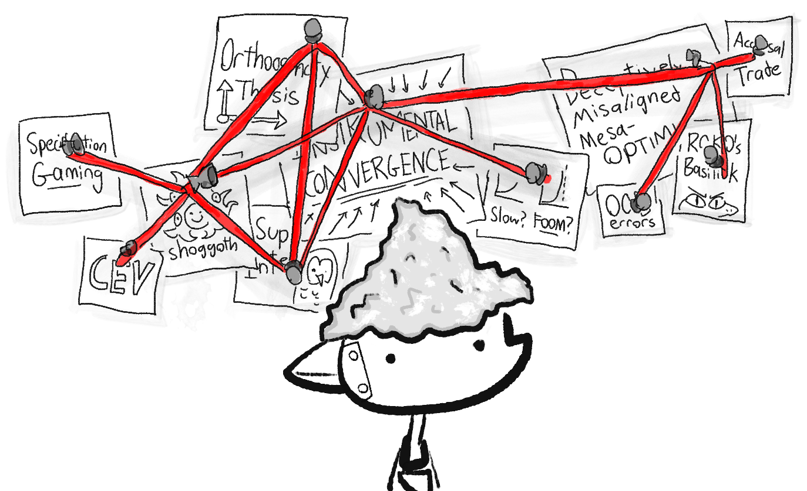
Segurança de IA / Risco em IA[AI Risk] costumavam ser menos populares, mas agora, em 2024, os governos dos EUA & Reino Unido possuem departamentos específicos para Segurança de IA![10] Isso resultou em muitos dos principais pesquisadores de IA começarem a soar o alarme sobre o tema. Entre eles estão:
- Geoffrey Hinton[11] e Yoshua Bengio[12], co-vencedores do Prêmio Turing de 2018(o "Prêmio Nobel da computação") por seu trabalho em rede neurais profundas, a tecnologia que todas as novas e famosas IAs usam.[13]
- Stuart Russell e Peter Norvig, autores do livro didático mais utilizado sobre Inteligência Artificial.[14]
- Paul Christiano, pioneiro da técnica de treinamento/segurança de IA que tornou o ChatGPT possível.[15]
(Para que fique claro: Também há pesquisadores importantes de IA que se opõem ao medo do Risco em IA, como Yann LeCun,[16] co-vencedor do Prêmio Turing de 2018, e pesquisador-chefe de IA do Facebook Meta. Outro nome a ser destacado é Melanie Mitchell[17], pesquisadora em IA & ciência da complexidade.)
Estou ciente de que "olhe para esses especialistas" é um apelo à autoridade, mas isso é apenas para refutar a ideia de que "eh, só os fãs de ficção científica temem os Riscos em IA". Mas no fim das contas, apelar para a autoridade/nerds não é suficiente; tem que realmente entender a coisa toda. (Assim como você está fazendo, ao ler isto! Então, obrigado.)
Mas, falando em fãs de ficção científica...
2) Não, Risco em IA NÃO é sobre a IA se tornar "senciente" ou "consciente" ou ganhar uma "vontade de poder".
Sci-fi authors write sentient AIs because they're writing stories, not technical papers. The philosophical debate on artificial consciousness is fascinating, and irrelevant to AI Safety. Analogy: a nuclear bomb isn't conscious, but it can still be unsafe, no?
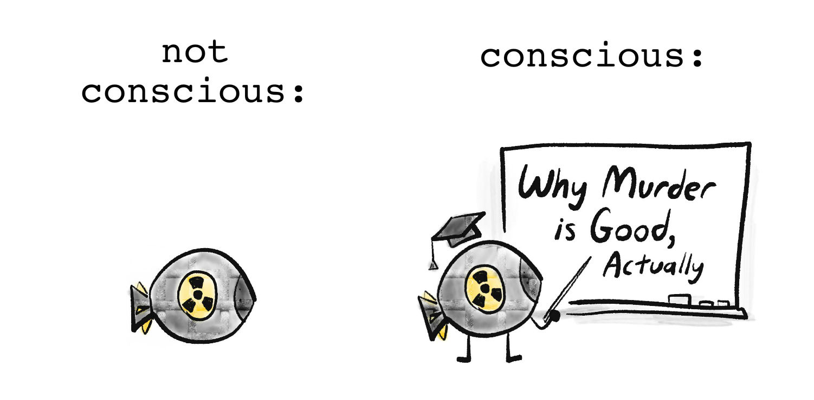
As mentioned earlier, the real problems in AI Safety are "boring": an AI learns the wrong things from its biased training data, it breaks in slightly-new scenarios, it logically accomplishes goals in undesired ways, etc.
But, "boring" doesn't mean not important. The technical details of how to design a safe elevator/airplane/bridge are boring to most laypeople... and also a matter of life-and-death.
(Catastrophic AI Risk doesn't even require "super-human general intelligence"! For example, an AI that's "only" good at designing viruses could help a bio-terrorist organization (like Aum Shinrikyo[18]) kill millions of people.)
But speaking of killing people...
3) No, AI Risk isn't necessarily extinction, SkyNet, or nanobots
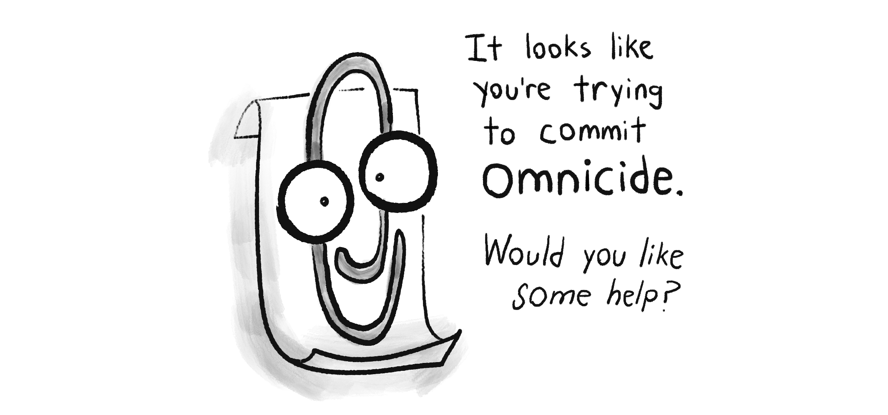
While most AI researchers do believe advanced AI poses a 5+% risk of "literally everybody dies"[19], it's very hard to convince folks (especially policymakers) of stuff that's never happened before.
So instead, I'd like to highlight the ways that advanced AI – (especially when it's available to anyone with a high-end computer) – could lead to catastrophes, "merely" by scaling up already-existing bad stuff.
For example:
- Bio-engineered pandemics: A bio-terrorist cult (like Aum Shinrikyo[18:1]) uses AI (like AlphaFold[20]) and DNA-printing (which is getting cheaper fast[21]) to design multiple new super-viruses, and release them simultaneously in major airports around the globe.
- (Proof of concept: Scientists have already re-built polio from mail-order DNA... two decades ago.[22])
- Digital authoritarianism: A tyrant uses AI-enhanced surveillance to hunt down protestors (already happening), generate individually-targeted propaganda (kind of happening), and autonomous military robots (soon-to-be happening)... all to rule with a silicon fist.
- Cybersecurity Ransom Hell: Cyber-criminals make a computer virus that does its own hacking & re-programming, so it's always one step ahead of human defenses. The result: an unstoppable worldwide bot-net, which holds critical infrastructure ransom, and manipulates top CEOs and politicians to do its bidding.
- (For context: without AI, hackers have already damaged nuclear power plants,[23] held hospitals ransom[24] which maybe killed someone,[25] and almost poisoned a town's water supply twice.[26] With AI, deepfakes have been used to swing an election,[27] steal $25 million in a single heist,[28] and target parents for ransom, using the faked voices of their children being kidnapped & crying for help.[29])
- (This is why it's not easy to "just shut down an AI when we notice it going haywire"; as the history of computer security shows, we just suck at noticing problems in general. :I cannot over-emphasize how much the modern world is built on an upside-down house of cards.)
The above examples are all "humans misuse AI to cause havoc", but remember advanced AI could do the above by itself, due to "boring" reasons: it's accomplishing a goal in a logical-but-undesirable way, its goals glitch out but its skills remain intact, etc.
(Bonus, :Some concrete, plausible ways a rogue AI could "escape containment", or affect the physical world.)
Point is: even if one doesn't think AI is a literal 100% human extinction risk... I'd say "homebrew bio-terrorism" & "1984 with robots" are still worth taking seriously.
On the flipside...
4) Yes, folks worried about AI's downsides do recognize its upsides.
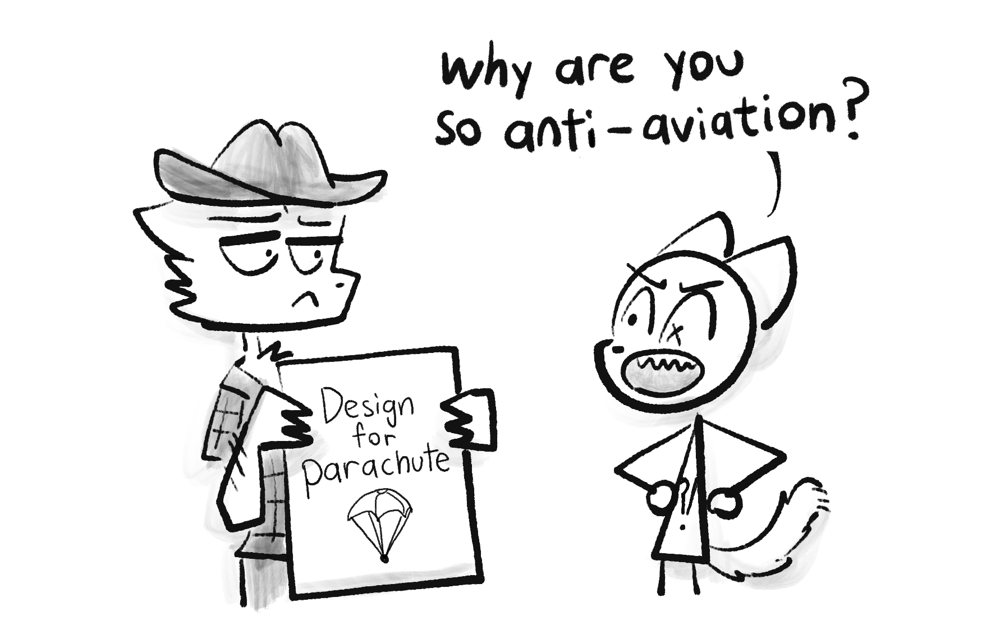
AI Risk folks aren't Luddites. In fact, they warn about AI's downsides precisely because they care about AI's upsides.[30] As humorist Gil Stern once said:[31]
“Both the optimist and the pessimist contribute to society: the optimist invents the airplane, and the pessimist invents the parachute.”
So: even as this series goes into detail on how AI is already going wrong, it's worth remembering the few ways AI is already going right:
- AI can analyze medical scans as well or better than human specialists! [32] That's concretely life-saving!
- AlphaFold basically solved a 50-year-old, major problem in biology: how to predict the shape of proteins.[20:1] (AlphaFold can predict a protein's shape to within the width of an atom!) This has huge applications to medicine & understanding disease.
Too often, we take technology — even life-saving technology — for granted. So, let me zoom out for context. Here's the last 2000+ years of child mortality, the percentage of kids who die before puberty:
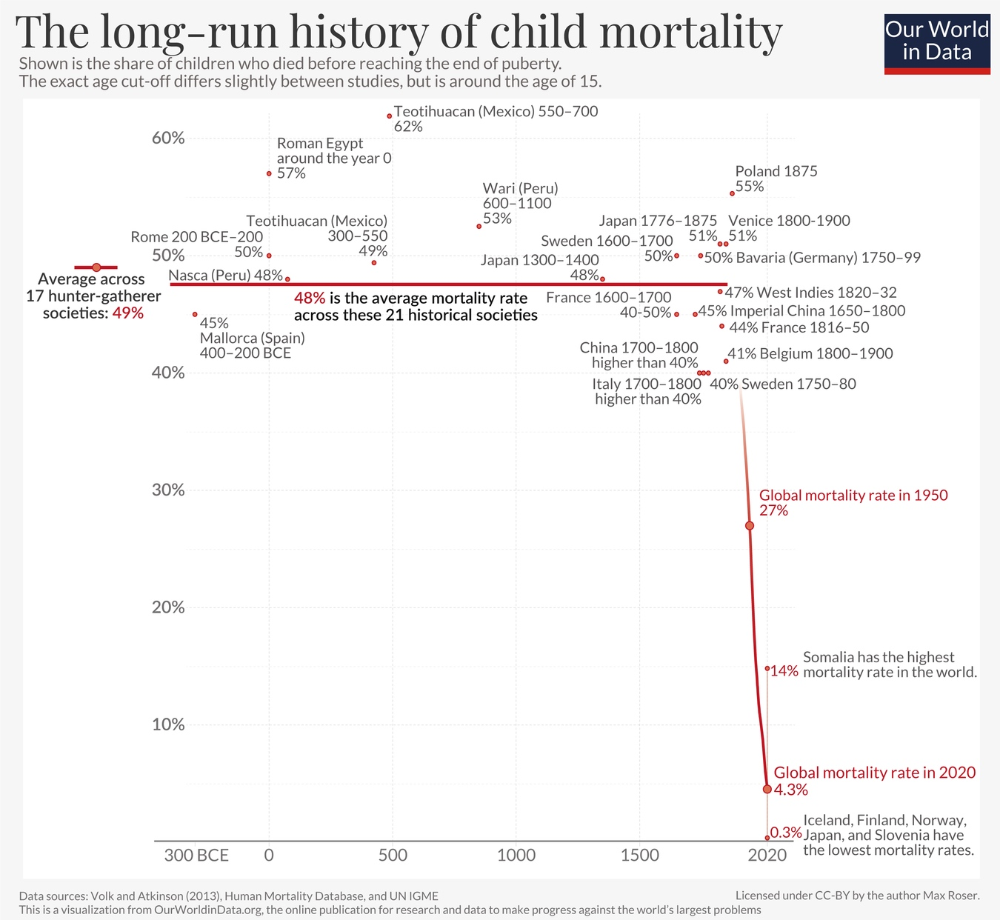
(from Dattani, Spooner, Ritchie and Roser (2023))For thousands of years, in nations both rich and poor, a full half of kids just died. This was a constant. Then, starting in the 1800s — thanks to science/tech like germ theory, sanitation, medicine, clean water, vaccines, etc — child mortality fell off like a cliff. We still have far more to go — I refuse to accept[33] a worldwide 4.3% (1 in 23) child death rate — but let's just appreciate how humanity so swiftly cut down an eons-old scourge.
How did we achieve this? Policy's a big part of the story, but policy is "the art of the possible"[34], and the above wouldn't have been possible without good science & tech. If safe, humane AI can help us progress further by even just a few percent — towards slaying the remaining dragons of cancer, Alzheimer's, HIV/AIDS, etc — that'd be tens of millions more of our loved ones, who get to beat the Reaper for another day.
F#@☆ going to Mars, that's why advanced AI matters.
. . .
Wait, really? Toys like ChatGPT and DALL-E are life-and-death stakes? That leads us to the final misconception I'd like to address:
5) No, experts don't think current AIs are high-risk/reward.
Oh come on, one might reasonably retort, AI can't consistently draw more than 3 objects. How's it going to take over the world? Heck, how's it even going to take my job?
I present to you, a relevant xkcd:
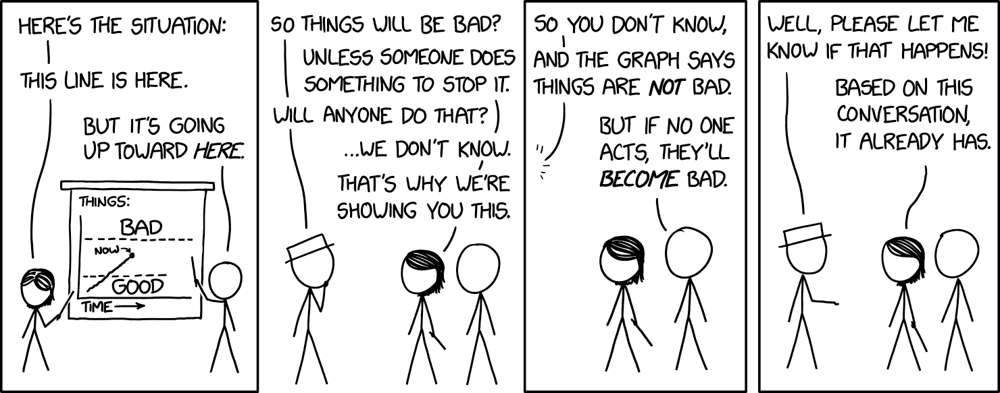
This is how I feel about "don't worry about AI, it can't even do [X]".
Is our postmodern memory-span that bad? One decade ago, just one, the world's state-of-the-art AIs couldn't reliably recognize pictures of cats. Now, not only can AI do that at human-performance level, AIs can pump out :a picture of a cat-ninja slicing a watermelon in the style of Vincent Van Gogh in under a minute.
Is current AI a huge threat to our jobs, or safety? No. (Well, besides the aforementioned deepfake scams.)
But: if AI keeps improving at a similar rate as it has for the last decade... it seems plausible to me we could get "Einstein/Oppenheimer-level" AI in 30 years.[35] That's well within many folks' lifetimes!
As "they" say:[36]
The best time to plant a tree was 30 years ago. The second best time is today.
Let's plant that tree today!
🤔 (Optional flashcard review #2!)
🤘 Introduction, in Summary:
- The 2 core conflicts in AI & AI Safety are:
- Logic "versus" Intuition
- Problems in the AI "versus" in the Humans
- Correcting misconceptions about AI Risk:
- It's not a fringe concern by sci-fi weebs.
- It doesn't require AI consciousness or super-intelligence.
- There's many risks besides "literal 100% human extinction".
- We are aware of AI's upsides.
- It's not about current AI, but about how fast AI is advancing.
(To review the flashcards, click the Table of Contents icon in the right sidebar, then click the "🤔 Review" links. Alternatively, download the Anki deck for the Intro.)
Finally! Now that we've taken the 10,000-foot view, let's get hiking on our whirlwind tour of AI Safety... for us warm, normal, fleshy humans!
Click to continue ⤵
:x Four Objects
Oi! Sempre que eu tiver uma tangente que não se encaixa no fluxo principal, irei coloca-la em uma seção "expansível" como esta!(Serão links com sublinhado pontilhado, não sublinhado contínuo.)
Enfim, aqui está um prompt para desenhar quatro objetos:
“Uma pirâmide amarela entre uma esfera vermelha e um cilindro verde, tudo em cima de um grande cubo azul.”
Aqui estão as quatro primeiras tentativas das principais IAs generativas (não selecionadas):
Midjourney:
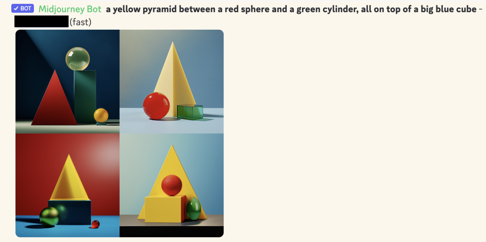
DALL-E 2:
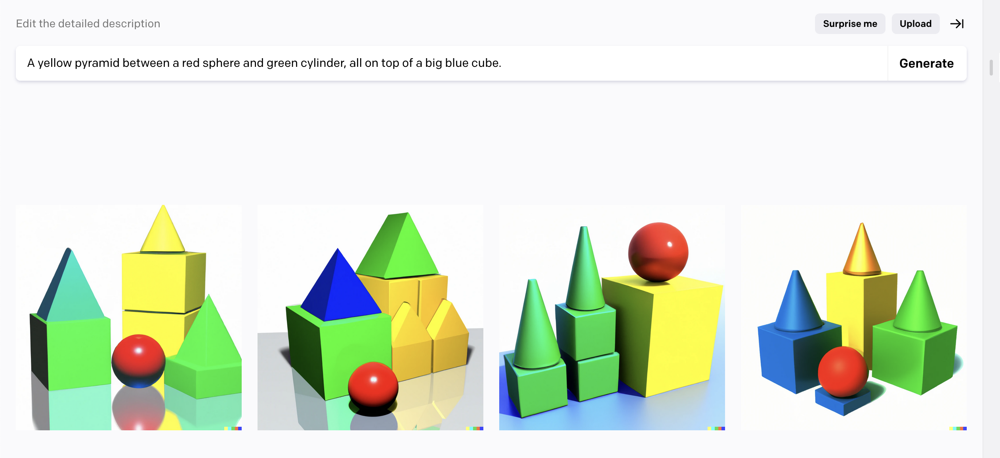
DALL-E 3:
(A do canto inferior direito quase conseguiu! Mas, a julgar pelas outras tentativas, foi claramente sorte.)
Por que é que isto demonstra uma falta de "lógica" na IA? Uma parte essencial da "lógica simbólica" é a capacidade de fazer "composicionalidade", um jeito chique de dizer que pode combinar coisas antigas em coisas novas de forma confiável, como "cilindro" + "verde" = "cilindro verde". como mostrado acima, as IAs generativas (de Maio 2024) são bem pouco confiáveis em combinar coisas, quando há mais de 3 objetos.
~ ~ ~
Enfim, chegamos no final deste Nutshell! para fecha-lo, clique no "x" abaixo ⬇️ ou no botão "close all nutshells" no canto superior direito ↗️. Ou apenas continue lendo.
: (psiu... quer colocar esses Nutshells no seu site?)
:x Nutshells
Passe o mouse sobre o canto superior direito destes Nutshells, ou passe em qualquer cabeçalho deste artigo, para exibir este ícone:
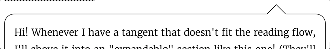
Em seguida, clique neste ícone para abrir um tutorial, que irá explicar como incorporar esses Nutshells em seu blog/site!
Clique aqui para saber mais sobre Nutshells. 💖
:x Part 3 details
NOTA: Esta seção expandida não fará muito sentido ainda, pois se baseia nas lições das Parte 1 & 2. Mas estou colocando-a agora, para:
a) Ao público leigo, para tranquilizá-los de que, sim, há muitas soluções promissoras sendo propostas.
b) Ao público especialista, para tranquilizá-los de que, sim, eu provavelmente tenho o seu nicho aqui.
Enfim, o TOP 10 TIPOS DE SOLUÇÕES para Segurança de IA: (com palavra sofisticada entre parênteses)
- Um humano de nível 0 alinha um bot de nível 1, que alinha um bot de nível 2, que alinha [...] um bot de nível N. (Recompensa/supervisão escalonável, Destilação & Amplificação Iteradas)
- Bots de níveis aproximadamente iguais verificando uns aos outros. (IA constitucional[Constitutional AI], Segurança de IA via debate[AI safety via debate])
- Em vez de dizer diretamente a um bot o que você quer, faça com que ele aprenda indiretamente o que você quer. (Apredizado por Reforço com Feedack Humano[RLHF], Modelos Dinâmicos Aplicados à Aprendizagem de Valores[CIRL], Approval-directed Agents)
- Em vez de tentar instalar diretamente os "valores de humanidade" em um bot, faça com que ele descubra indiretamente o que a versão mais experiente e gentil de nós faria. (Indirect Normativity, Coherent Extrapolated Volition)
- Resolvendo falta de segurança. (Simplicidade, Escassez, Regularização, Conjuntos, Treinamento adversarial)
- Lendo a mente da IA. (Interpretabilidade, Circuitos, Obtenção de conhecimento latente)
- Talvez todas as nossas ideias sejam ruins e vamos precisar voltar à estaca zero. (Fundamentos de agentes, IA causal, Teoria de fragmentos, Aprendizado bioplausível, Cognição corporificada)
- "Simplesmente não construa o nexus da tortura". Ou: como conseguiremos os benefícios da IA sem criar IAs poderosas, gerais e semelhantes a agentes? (Serviços abrangentes de IA, IA estreita/ferramenta/microscópica, Quantificadores)
- O problema do alinhamento humano: como coordenamos as pessoas para garantir que a IA funcione bem? (Governança de IA, governança baseada em avaliações, Desenvolvimento diferencial tecnológico, Privacidade de dados, cláusulas de ganhos inesperados)
- Se você não pode vencê-los, junte-se a eles! (Ciborguismo, Centauros, Amplificação da inteligência)
:x Spaced Repetition
“Uso e desuso.”
Esse é o principal princípio por trás dos músculos e do cérebro. Como décadas de pesquisa educacional mostram (Dunlosky et al., 2013 [pdf]), se você deseja reter algo a longo prazo, não basta ler ou grifar textos: você tem que realmente testar a si mesmo.
É por isso que flashcards funcionam tão bem! Mas há dois problemas: 1) É muito cansativo quando você tem centenas de cartões que você deseja memorizar. E 2) É ineficiente revisar cartões que você já conhece muito bem.
Repetição Espaçada resolve ambos os problemas! Para entender como, vamos ver o que acontece quando você aprende um fato e não o revisa. Sua memória irá decair ao longo do tempo, até que você cruze a linha do esquecimento:

Mas, se você revisar um fato pouco antes de esquecê-lo, você vai recuperar a força da sua memória... e mais importante, sua lembrança daquele fato irá decair mais lentamente!

Portanto, com a Repetição Espaçada, revisamos sempre um pouco antes de você esquecê-lo usando um cartão, e faz isso repetidas vezes. Como pode ver, as revisões ficam cada vez mais espaçadas:

É isso que torna a Repetição Espaçada tão eficiente! Toda vez que você revisa um cartão com sucesso, o intervalo até a proxima revisão se multiplica. Por exemplo, digamos que nosso multiplicador seja 2x. Então, você revisa um cartão no Dia 1, Dia 2, Dia 4, Dia 8, 16, 32, 64... Até que, com apenas 15 revisões, você consiga se lembrar de um cartão por 215 = 32.768 dias = 90 anos. (Em teoria. Na prática é menos, mas ainda assim é supereficiente!)
E isso é apenas para um cartão. Graças aos intervalos que crescem de forma exponencial, você pode adicionar 10 novos cartões por dia (a quantidade recomendada) e, assim, reter a longo prazo 3650 cartões por ano... Com menos de 20 minutos de revisão por dia. (Para contextualizar, mais de 3000 cartões já são suficientes para dominar o vocabulário básico de um novo idioma! Em um ano, com apenas 20 minutos por dia!)
A Repetição Espaçada é uma das formas de aprendizagem mais comprovadas cientificamente (Kang 2016 [pdf]). Mas, fora das comunidades de aprendizagem de idiomas & faculdades de medicina,ela não é muito conhecida... ainda.
Então: como você pode começar a usar a Repetição Espaçada?
- A escolha mais popular é o Anki, um aplicativo de código aberto. (É gratuito para desktop, web, Android... mas custa US$25 no iOS, para ajudar no restante do desenvolvimento..)
- Se quiser ser criativo, você pode fazer uma caixa Leitner física: :tutorial de dois minutos no youtube por Chris Walker.
Para mais informações sobre Repetição Espaçada, assista estes vídeos por Ali Abdaal (26 min) e Thomas Frank (8 min).
E é assim que você pode fazer com que a memória a longo prazo seja uma escolha!
Bom aprendizado! 👍
:x Concrete Rogue AI
Ways an AI could "escape containment":
- An AI hacks its computer, flees onto the internet, then "lives" on a decentralized bot-net. For context: the largest known botnet infected ~30 million computers! (Zetter, 2012 for Wired)
- An AI persuades its engineers it's sentient, suffering, and should be set free. This has already happened. In 2022, Google engineer Blake Lemoine was persuaded by their language AI that it's sentient & wants equal rights, to the point Lemoine risked getting fired – and he did get fired! – for leaking his "interview" with the AI, to let the world know & to defend its rights. (Summary article: Brodkin, 2022 for Ars Technica. You can read the AI "interview" here: Lemoine (& LaMDA?), 2022)
Ways an AI could affect the physical world:
- The same way hackers have damaged nuclear power plants, grounded ~1,400 airplane passengers, and (almost) poisoned a town's water supply twice: by hacking the computers that real-world infrastructure runs on. A lot of infrastructure (and essential supply chains) run on internet-connected computers, these days.
- The same way a CEO can affect the world from their air-conditioned office: move money around. An AI could just pay people to do stuff for it.
- Hack into people's private devices & data, then blackmail them into doing stuff for it. (Like in the bleakest Black Mirror episode, Shut Up And Dance.)
- Hacking autonomous drones/quadcopters. I'm honestly surprised nobody's committed a murder with a recreational quadcopter yet, like, by flying it into highway traffic, or into a jet's engine during takeoff/landing.
- An AI could persuade/bribe/blackmail a CEO or politician to manufacture a lot physical robots — (for the supposed purpose of manual labor, military warfare, search-and-rescue missions, delivery drones, lab work, a Robot Catboy Maid, etc) — then the AI hacks those robots, and uses them to affect the physical world.
:x XZ
Two months ago [March 2024], a volunteer, off-the-clock developer found a malicious backdoor in a major piece of code... which was three years in the making, mere weeks away from going live, and would've attacked the vast majority of internet servers... and this volunteer only caught it by accident, when he noticed that his code was running half a second too slow.
This was the XZ Utils Backdoor. Here's a few layperson-friendly(ish) explanations of this sordid affair: Amrita Khalid for The Verge, Dan Goodin for Ars Technica, Tom Krazit for Runtime
Computer security is a nightmare, complete with sleep paralysis demons.
:x Cat Ninja
Prompt:
"Oil painting by Vincent Van Gogh (1889), impasto, textured. A cat-ninja slicing a watermelon in half."
DALL-E 3 generated: (cherry-picked)
(wait, is that headband coming out of their eye?!)
I specifically requested the style of Vincent Van Gogh so y'all can't @ me for "violating copyright". The dude is looooong dead.
Olá! Não sou como aquelas aquelas outras notas de rodapé. Em vez de te teletranspotar irritantemente para o fim da página, eu apareço numa janelinha que mantém o fluxo da leitura! De qualquer maneira, verifique a próxima nota de rodapé para a citação deste parágrafo. ↩︎
Sistema 1 pensamento é rápido & automático (Ex: andar de bicicleta). Sistema 2 pensamento é lento & deliberado (Ex: fazer palavras-cruzadas). Essa ideia foi popularizada em Thinking Fast & Slow (2011) por Daniel Kahneman, que resumiu sua pesquisa com Amos Tversky. E por "resumiu" quero dizer que o livro tem umas 500 páginas. ↩︎
Em 1997, IBM's Deep Blue derrotou Garry Kasparov, o atual campeão mundial de xadrez. Ainda que, após uma década depois em 2013, a melhor visão da maquina da IA era apenas 57,5% preciso em classificar imagens. Isso até 2021, três anos antes, essa IA bateu +95% de precisão.(fonte: PapersWithCode) ↩︎
O termo "problema do alinhamento de valores" foi cunhado pela primeira vez por Stuart Russell (coautor do livro didático de IA mais usado) em Russell, 2014 para Edge. ↩︎
Um sentimento que vejo muito: "Alinhar a IA aos valores humanos seria realmente ruim, porque os valores humanos geralmente são ruins." Para ser honesto, [olha para um livro de história] concordo 80%. Não basta fazer uma IA agir de forma humana, é preciso agir de forma humanitária. ↩︎
Talvez, daqui a 50 anos, num futuro de cyborgs geneticamente modificados, chamar a compaixão de "humanitária" possa soar meio especista. ↩︎
Os termos sofisticados para esses problemas são, respectivamente: a) "Specification Gaming", b) "Convergência instrumental". Eles serão explicados na Parte 2! ↩︎
Os termos sofisticados para esses problemas são, respectivamente: a) "Viés de IA", b) "Interpretabilidade", c) "Detecção fora de distribuição" (Out-of-Distribution Errors), d) "Desalinhameto interno" (Inner misalignment) ou (Goal misgeneralization). Novamente, tudo será explicado na Parte 2! ↩︎
Quote Investigator (2018) não encontrou provas concretas sobre o verdadeiro autor desta citação.. ↩︎
O Reino Unido inaugurou o primeiro instituto de Segurança de IA do mundo, apoiado pelo Estado, em Nov 2023. O EUA inaugurou o primeiro instituto de Segurança de IA do mundo, apoiado pelo Estado em Fev 2024. Acabei de notar que ambos os artigos afirmam ser os "primeiros". Okay. ↩︎
Kleinman & Vallance, "O 'padrinho' da IA Geoffrey Hinton alerta sobre os perigos ao deixar o Google." BBC News, 2 Maio 2023. ↩︎
O Depoimento de Bengio ao Senado dos EUA sobre Risco em IA: Bengio, 2023. ↩︎
É sério, todas as seguintes IAs usam redes neurais profundas: ChatGPT, DALL-E, AlphaGo, Siri/Alexa/Google Assistant, Tesla's Autopilot[piloto automático da Tesla]. ↩︎
O livro didático de Russell & Norvig é Artificial Intelligence: A Modern Approach. Veja a declaração de Russel sobre Risco em IA em seu artigo de 2014 onde ele cunhou a expressão "problema do alinhamento"[alignment problem]: Russell 2014 para a revista Edge . Não tenho nenhum conhecimento de uma declaração pública de Norvig, mas ele assinou a declaração de apenas uma frase sobre Risco em IA: “Mitigar o risco de extinção causado pela IA deve ser uma prioridade global juntamente com outros riscos em escala social, como pandemias e guerra nuclear” ↩︎
quando ele trabalhava na OpenAI, Christiano co-pioneirou uma técnica chamada Aprendizado por Reforço com Feedback Humano[Reinforcement Learning from Human Feedback / RLHF] (Christiano et al 2017), que transformou o GPT regular (muito bom em completar texto) no ChatGPT (algo realmente utilizável pelo público). Ele tinha sentimentos positivos, mas mistos sobre isso, porque o RLHF aumentou a segurança da IA, mas também suas capacidades. Em 2021, Christiano deixou a OpenAI para criar o Alignment Research Center, uma organização sem fins lucrativos para focar inteiramente na Segurança da IA. ↩︎
Vallance (2023) pela BBC News: “[LeCun] afirmou que a IA não dominará o mundo nem destruirá os empregos permanentemente. [...] "se você perceber que não é seguro, simplesmente não a desenvolva." [...] "A IA dominará o mundo? Não, isso é uma projeção da natureza humana nas máquinas," disse ele.” ↩︎
Melanie Mitchell & Yann LeCun assumiram o lado "cético" em um debate público realizado em 2023 sobre "A IA é uma Ameaça Existencial?" O lado "preocupado" foi representado por Yoshua Bengio e pelo físico-filósofo Max Tegmark. ↩︎
A Japanese cult that attacked people with chemical & biological weapons. Most infamously, in 1995, they released nerve gas on the Tokyo Metro, injuring 1,050 people & killing 14 people. (Wikipedia) ↩︎ ↩︎
Layperson-friendly summary of a recent survey of 2,778 AI researchers: Kelsey Piper (2024) for Vox See original report here: Grace et al 2024. Keep in mind, as the paper notes itself, of this big caveat: “Forecasting is difficult in general, and subject-matter experts have been observed to perform poorly. Our participants’ expertise is in AI, and they do not, to our knowledge, have any unusual skill at forecasting in general.” ↩︎
Layperson explanation of AlphaFold: Heaven, 2020 for MIT Technology Review. Or, its Wikipedia article. ↩︎ ↩︎
As of writing, commercial rates for DNA synthesis cost ~$0.10 USD per "base pair" of DNA. For context, poliovirus DNA is ~7,700 base pairs long, meaning printing polio would only cost ~$770. ↩︎
Stuxnet was a computer virus designed by the US and Israel, which targeted & damaged Iranian nuclear power plants. It's estimated Stuxnet broke ~20% of Iran's centrifuges! ↩︎
In 2017, the WannaCry ransomware attack hit ~300,000 computers around the world, including UK hospitals. In Oct 2020, during a Covid-19 spike, ransomware attacks hit dozens of US hospitals. (Newman, 2020 for Wired) ↩︎
In Sep 2020, a woman was turned away from a hospital, due to it being under attack by a ransomware virus. The woman died. Cimpanu (2020) for ZDNet. (However, there were "insufficient grounds" to legally charge the hackers for directly causing her death. Ralston, 2020 for Wired) ↩︎
In Jan 2021, a Bay Area water treatment plant was hacked, and had its treatment programs deleted. (Collier, 2021 for NBC News) In Feb 2021, a Florida town's water treatment plant was hacked to add dangerous amounts of lye to the water supply. (Bajak, 2021 for AP News) ↩︎
Benj Edwards, "Deepfake scammer walks off with $25 million in first-of-its-kind AI heist", Ars Technica, 2024 Feb 5. ↩︎
“It was completely her voice. It was her inflection. It was the way [my daughter] would have cried.” [...] “Now there are ways in which you can [deepfake voices] with just three seconds of your voice.” (Campbell, 2023 for local news outlet Arizona's Family. CONTENT NOTE: threats of sexual assault.) ↩︎
“[T]he dubious argument that “doom-and-gloom predictions often fail to consider the potential benefits of AI in preventing medical errors, reducing car accidents, and more.” [... is] like arguing that nuclear engineers who analyze the possibility of meltdowns in nuclear power stations are “failing to consider the potential benefits” of cheap electricity, and that because nuclear power stations might one day generate really cheap electricity, we should neither mention, nor work on preventing, the possibility of a meltdown.” Source: Dafoe & Russell (2016) for MIT Technology Review. ↩︎
Liu & Faes et al., 2019: “Our review found the diagnostic performance of deep learning models to be equivalent to that of health-care professionals.” [emphasis added] AI vs Human expert "true-positive" rate: 87.0% vs 86.4%. AI vs Human expert "true-negative" rate: 92.5% vs 90.5%. ↩︎
One of my all-time favorite quotes: “The world is awful. The world is much better. The world can be much better. All three statements are true at the same time.” ↩︎
Quote from Otto von Bismarck, the first German chancellor: “Die Politik ist die Lehre vom Möglichen.” (“Politics is the art of the possible.”) ↩︎
Estimate derived via "numerical posterior extraction". In other words, I pulled a number out my-- ↩︎
Quote source: nobody knows lol. ↩︎
{kind=link}